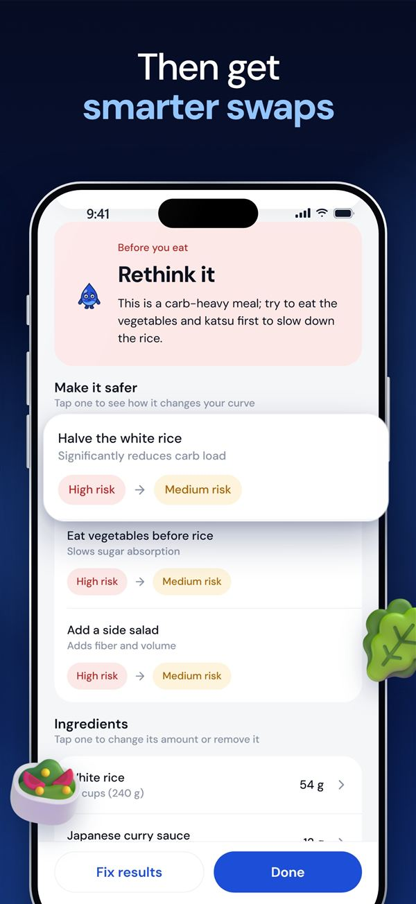
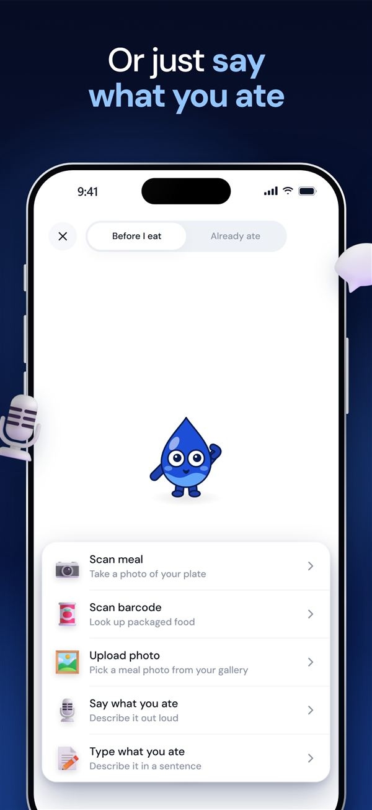
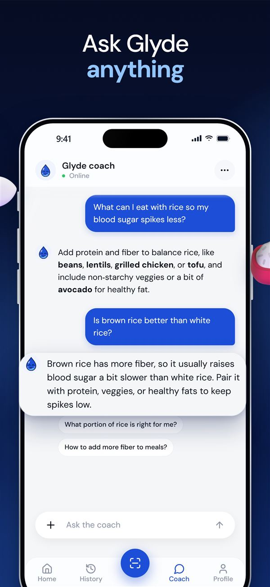

How it works
A smarter plate in seconds
Glyde estimates the carbs and the likely blood sugar spike from the food alone. No meter, no sensor, no counting.
Add your meal
Take a photo, scan a barcode, say what you ate or type it. Any cuisine works.
See your spike risk
Carbs per food and in total, a clear spike risk with the reason, and the shape of the next two hours.
Make it gentler
Two or three practical swaps for every meal, like half the rice or vegetables first. Watch the curve redraw.



Everything in one place
Built for real meals, from everywhere
From jollof rice and injera to pho, biryani and arepas. Tell Glyde your cuisines and it learns your dishes and portions.
Photo scan
Point, shoot, done. Every food on the plate, counted.
Barcode scan
Packaged food with the label's real nutrition values.
Say it
Voice logging that understands dish names.
Food coach
Short, specific answers that know what you've eaten today.
Patterns
A daily spike score, a monthly heatmap and the foods that spike you most.
Private by design
Your meals, photos and chats stay on your phone.
Why Glyde
The same meal can spike you differently
Continuous glucose monitors are expensive and most people with diabetes don't have one. Glyde gives you a useful read on every meal from the food alone, so small changes add up.
- No sensor or meter needed
- Type 1, type 2 and prediabetes
- Dishes from cuisines around the world
- Never gives medication or insulin advice
- Delete your account and data anytime
Pricing
Start with 3 days free
Try everything free for 3 days on the yearly plan. Cancel anytime in your iPhone's Settings.
Yearly
3-day free trial, then about $0.77 a week
Monthly
Billed every month
Weekly
Billed every week
Prices in US dollars; the App Store shows your local price. Subscriptions renew automatically unless cancelled at least 24 hours before the end of the trial or period.
Questions
Good to know
Is Glyde a medical device?
No. Glyde gives AI estimates from the food you scan or describe. It doesn't measure blood sugar, diagnose or treat anything, and never gives medication or insulin advice. Always follow your doctor or diabetes care team.
Do I need a CGM or glucose meter?
No. Glyde works from the food alone, so you get a read on every meal without any hardware.
How accurate are the estimates?
Glyde uses standard carb values for foods from around the world. Portions from a photo are estimates, so you can change any food's amount or fix the result in your own words and the numbers update instantly.
Does it work with my food?
Yes. Glyde recognises dishes from many cuisines and learns the ones you choose during setup.
What happens to my data?
Your meals, photos and chats stay on your phone. Photos, voice notes and messages are analysed by our AI providers and not kept. You can delete your account and all data from the app at any time. Read the privacy policy.
How do I cancel?
In your iPhone's Settings, tap your name, then Subscriptions, then Glyde. Or open Glyde, go to Profile and tap Manage subscription.
Support
Questions, feedback or a problem with the app? Email us and we'll get back to you.
glydeapp202@gmail.com